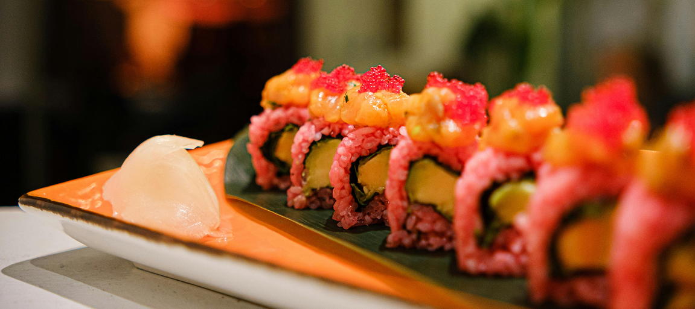

Welcome to
Happi Sushi!

Fusion Appetizers
Tuna Tataki
Lightly seared tuna, served with ponzu sauce and garnished with daikon and scallions
Thai Fish Cakes
Deep-fried fish patties with a side of cucumber relish
Vietnamese Grilled Pork Skewers
Marinated pork skewers, served with pickled vegetables and dipping sauce
Shiso Tempura Shrimp
Crispy tempura shrimp wrapped in shiso leaves, served with soy dipping sauce
Fusion Sushi & Rolls
Chef's Choice Sushi Platter
Selection of the freshest nigiri (10 pieces) and a tuna roll
Sashimi Platter
12 pieces of assorted sashimi, served with wasabi and soy sauce
Signature Roll
Spicy tuna, avocado, cucumber, topped with seared salmon and miso glaze
Tropical Roll
Shrimp tempura, avocado, topped with mango, and drizzled with a pineapple chili sauce
Crispy Volcano Roll
picy crab mix and avocado, deep-fried and topped with eel sauce and spicy mayo
Shiso Garden Roll
ucumber, avocado, pickled radish, and shiso leaf wrapped in soy paper (vegetarian)

Japanese Entrees
Grilled Miso Black Cod
Marinated black cod fillet grilled to perfection, served with steamed rice and sautéed bok choy
Tempura Udon
Thick udon noodles in a light dashi broth, served with shrimp tempura and scallions
Crispy Peking Duck
Slow-roasted duck, served with pancakes, hoisin sauce, and scallions
Vietnamese Entrees
Pho with Wagyu Beef
Traditional Vietnamese pho broth with thin slices of wagyu beef, rice noodles, fresh herbs, and lime
Spicy Lemongrass Beef Noodle Soup
A bold, aromatic broth with sliced beef shank, pork hock, and rice noodles, garnished with chili oil, lime, and fresh herbs
Hoi An Chicken Rice
Shredded poached chicken over fragrant turmeric rice with herbs, shallot oil, and a tangy dipping sauce
Thai Entrees
Thai Green Curry
Creamy coconut curry with chicken, bamboo shoots, bell peppers, and Thai basil, served with jasmine rice
Shrimp Pad Thai
Classic stir-fried rice noodles with shrimp, egg, tofu, bean sprouts, crushed peanuts, and lime
Pumpkin Red Curry
Silky red curry with roasted kabocha squash, bell pepper, and Thai basil, finished with coconut cream
Desserts
Mochi Ice Cream
Chewy rice cakes filled with mango, green tea, or strawberry ice cream
Coconut Sticky Rice with Mango
Sweet sticky rice served with ripe mango and coconut sauce drizzle
Matcha Cheesecake
Creamy green tea cheesecake with a crispy cookie crust
Lychee Sorbet
Light and refreshing lychee sorbet with fresh mint
Craft Cocktails
Lychee Martini
Vodka, lychee puree, and a splash of lime juice
Pandan Gin Fizz
Pandan-infused gin, lime, soda, and egg white for a frothy finish
Pineapple Shiso Smash
Fresh pineapple, muddled shiso leaves, rum, and a hint of ginger syrup
Tokyo Mule
Vodka, ginger beer, lime, and yuzu
Sake Menu
Junmai (Pure Rice Sake)
Hakkaisan Junmai (Niigata)
Crisp and dry with subtle notes of rice and a clean finish
Shichida Junmai (Saga)
Full-bodied with rich umami flavor and mild acidity
Kikusui Junmai (Niigata)
Light and refreshing with subtle notes of melon and citrus
Junmai Ginjo (Premium Pure Rice Sake)
Dassai 50 Junmai Ginjo (Yamaguchi)
Delicate and fragrant with hints of tropical fruit and peach
Suigei Tokubetsu Junmai Ginjo (Kochi)
Dry and clean, with bright acidity and a hint of grapefruit
Tedorigawa Junmai Ginjo "Lady Luck" (Ishikawa)
Bright and refreshing with aromas of white flowers and green apples
Daiginjo (Super Premium Sake)
Kubota Manju Daiginjo (Niigata)
Elegant and silky with floral aromas and refined sweetness
Katsuyama Ken Daiginjo (Miyagi)
Rich and velvety with fruity notes of ripe pear and melon
Tatsuriki "Chotokusen" Daiginjo (Hyogo)
Luxurious and complex with subtle notes of lychee and pear
Nigori (Unfiltered Sake)
Hakutsuru Sayuri Nigori (Hyogo)
Creamy and sweet with notes of coconut and vanilla
Shiro Sasa Nigori (Akita)
Thick and rich with bold sweetness and a hint of banana
Sparkling Sake
Dassai Sparkling 50 (Yamaguchi)
Effervescent and refreshing with crisp finish and fruity notes
Mio Sparkling Sake (Hyogo)
Lightly sparkling with sweet and fruity profile
Specialty Sake
Eikun "The Sleeping Beauty" Junmai Daiginjo (Kyoto)
Delicate floral aroma and soft, silky texture
Isojiman Tokubetsu Junmai (Shizuoka)
Fresh and crisp with mineral-driven finish
Beer
Asahi
Sapporo
Singha
Tsingtao
About the ownersHappi Sushi is a sushi bar owned by Micheal Chen and Daniel Martinez, who wish to bring the wonderful world of Asian cuisine to the suburbs of Long Island. We offer an authentic and classical dining experience with high quality sushi and finely made drinks. With a traditional but welcoming atmosphere, we aim to do honor to the Asian cultures while welcoming all guests to introduce them to the fine cuisines of Japan, Thailand, and Vietnam. |
Contact us
Happi Sushi
Monday - Thursday: 5pm-10pm
Friday - Saturday: 4pm - 12am
blahblahblahstreetahjbeffadress
516-325-2352
happisushi@gmail.com
@happisushi